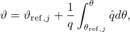
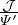

Next, examine the meaning of the following volume integral
|
| (232) |
where the volume V = V (ψ) is the volume within the magnetic surface labeled by ψ. Using ∇⋅ B = 0, the quantity D can be further written as
 | (233) |
Note that 𜃠is not a single-value function of the spacial points. In order to evaluate the integration in Eq. (233), we need to select one branch of 𝜃, which can be chosen to be 0 ≤ 𜃠< 2π. Note that function 𜃠= 𝜃(R,Z) is not continuous in the vicinity of the contour of 𜃠= 0. Next, we want to use the Gauss’s theorem to convert the above volume integration to surface integration. Noting the discontinuity of the integrand 𝜃B in the vicinity of the contour of 𜃠= 0, the volume should be cut along the contour, thus, generating two surfaces. Denote these two surfaces by S1 and S2, then equation (233) is written as
 | (235) |
Using the expression of the volume element dτ = |𝒥|d𝜃dϕdψ, Ψp can be further written in terms of flux surface averaged quantities.
Note that the sign of the Jacobian appears in Eq. (236), which is due to the positive direction of surface S2 is determined by the positive direction of 𝜃, which in turn is determined by the sign of the Jacobian (In my code, however, the positive direction of 𜃠is chosen by me and the sign of the Jacobian is determined by the positive direction of 𝜃). We can verify the sign of Eq. (236) is exactly consistent with that in Eq. (27).Similarly, the toroidal flux within a flux surface is written as
 | (237) |
the poloidal current within a flux surface is written as
 | (238) |
and toroidal current within a flux surface is written as
|
| (239) |
(**check**)The toroidal magnetic flux is written as
⇒ Ψt′ = g 
|
⇒ = g 
|
 | (241) |
Next, calculate the derivative of the toroidal flux with respect to the poloidal flux.
Comparing this result with Eq. (??) indicates that it is equal to the safety factor, i.e.,
 | (243) |
By using the contravariant representation of current density (??), the poloidal current within a magnetic surface is written as
| −∇ψ ×∇𜃠− g′∇ϕ ×∇ψ, |
The toroidal current is written as
The last equality is due to ∇ψ = 0 at ψ = 0. By using the flux surface average operator, Eq. (245) is written
 | (246) |
Next, calculate another useful surface-averaged quantity,
![⟨ [( ) ( ) ]⟩
g2- 1Ψ′ 𝒥-|∇ψ |2 + 1Ψ ′∇ ψ⋅∇ 𜃠ğ’¥
-⟨J-⋅B⟩-- --𝒥---g--R2------ψ----g---------R2-𝜃---
⟨B⋅∇ ϕ⟩ = μ0⟨g∕R2⟩
2π∫ 2π [(1 𝒥 ) (1 𝒥) ]
V′ 0 d𝜃g2 gΨ ′R2 |∇ ψ|2 ψ + gΨ ′∇ ψ ⋅∇𝜃R2 𝜃
= -----------------------−2-------------------
[( μ0g⟨R) ⟩ ( ) ]
2π′g2∫ 2π d𜃠1Ψ ′ 𝒥2|∇ ψ|2 + 1Ψ ′∇ ψ ⋅∇𝜃-𝒥2
= V----0------g--R--------ψ---g---------R---𝜃-
μ0g⟨R −2⟩
2π ∫ 2π [(1 ′ 𒥠2) ]
V′g 0 d𜃠gΨ R2|∇ ψ| ψ
= ---------μ-⟨R−2⟩---------
∫ [0( ) ]
2Vπ′g 02π d𜃠1gΨ ′ 𝒥R2|∇ ψ|2
= -----------------------ψ- (247)
μ0⟨R−2⟩](tokamak_equilibrium328x.png)
![2π [ 1 (∫2π 𒥠) ]
⟨J ⋅B⟩ V′g gΨ′ 0 d𜃠R2|∇ ψ|2 ψ
⟨B-⋅∇ϕ⟩-= ---------μ-⟨R−2⟩---------
[ 0⟨ 2⟩]
V1′g 1gΨ′V′ |∇Rψ2|
= ----------−2------ψ
μ0⟨R[ ⟩′ ′⟨ 2⟩]
= ----g----- Ψ-V- |∇ψ|- (248)
μ0V ′⟨R−2⟩ g R2 ψ](tokamak_equilibrium329x.png)
Â
Â

![1 ∫
Ψp = 2π- B ⋅∇ 𝜃|𝒥 |d𝜃dϕd ψ
∫ ψ V ∫ 2π
= dψ B ⋅∇𝜃|𝒥|d𝜃
∫0 ∫0
ψ 2π ′
= 0 dψ 0 Ψ ∇ψ × ∇ϕ ⋅∇ 𝜃|𝒥 |d𝜃
∫ ψ ∫ 2π
= − sign(𝒥) dψ Ψ ′(ψ)d𝜃
0∫ 0
= − 2π sign(𝒥) ψ Ψ′(ψ )dψ
0
= − 2π sign(𝒥)[Ψ(ψ)− Ψ(0)]. (236)](tokamak_equilibrium311x.png)
![∫
Ψt =-1- B ⋅∇ ϕ|𝒥 |d𝜃dϕdψ
2∫π ∫
ψ 2π -1-
= 0 dψ 0 gR2 |𝒥 |d𝜃
∫ ψ[ V ′⟨ 1 ⟩ ]
= g--- -2- dψ. (240)
0 2π R](tokamak_equilibrium315x.png)

![∫
Iϕ(ψ) =-1- J ⋅∇ϕ 𝒥d𝜃dϕdψ
2π [ ]
1 ∫ ( ′ 𒥠2) ( ′ 𒥠)
= − 2πμ-- Ψ R2-|∇ψ| + Ψ R2-∇ψ ⋅∇ 𜃠∇ ψ × ∇ğœƒâ‹…∇ Ï•ğ’¥ d𝜃dϕdψ
0 [( ) ψ ( ) ]𝜃
1--∫ ′ 𝒥 2 ′ 𝒥-
= − μ0 Ψ R2 |∇ ψ| ψ + Ψ R2 ∇ψ ⋅∇ 𜃠𜃠d𝜃dψ
∫ [( ) ]
= − 1-- Ψ ′ 𝒥-|∇ ψ|2 d𝜃dψ
μ0 R2 ψ
∫ 2π ∫ ψ ( )
= − 1-- d𜃠dψ Ψ ′ 𝒥-|∇ ψ|2
μ0 0 0 R2 ψ
1 ∫ 2π ( ′ 𒥠2 )
= − μ0- d𜃠Ψ R2-|∇ ψ| − 0 . (245)
0](tokamak_equilibrium326x.png)